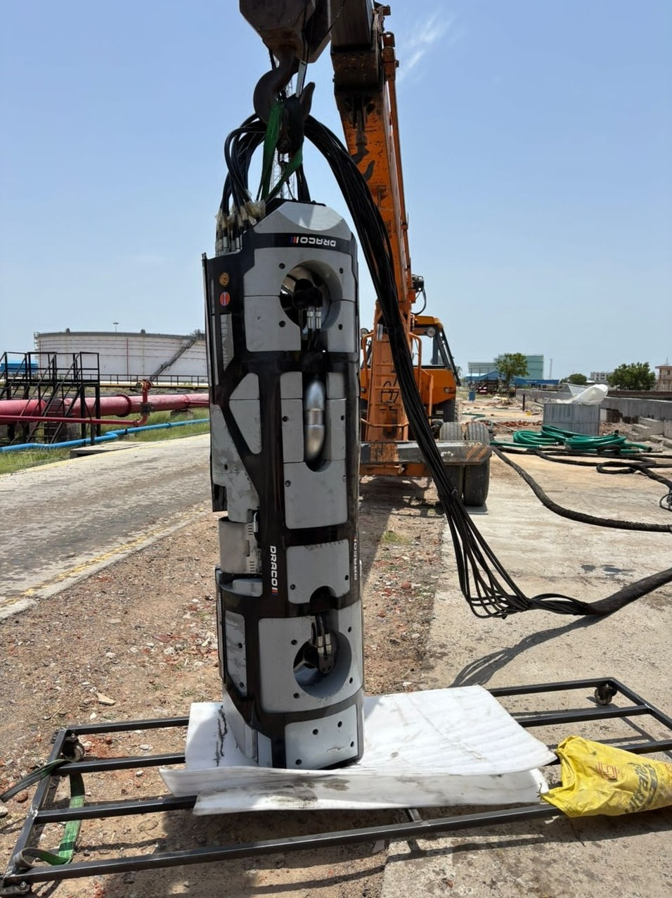
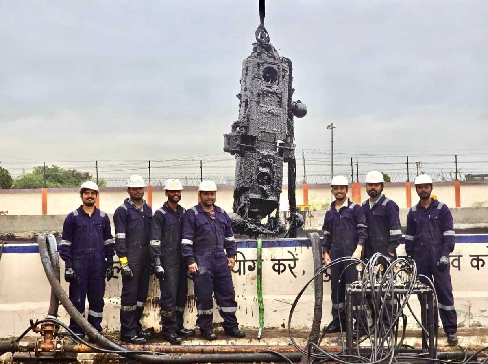

DRACO — Robotic Tank Cleaning System
Project owner for the DRACO project team, with technical leadership from concept design through qualification to field testing.
Crude oil storage tank maintenance in active oil & gas facilities — enabling in-service sludge removal without tank shutdown while minimising human entry into hazardous confined environments.
- Developed the hydraulic circuit architecture and selected components suitable for hazardous environments
- Performed hydraulic calculations — flow estimation, pressure losses, and system performance analysis
- Substantial contributor to structural design; carried out FEA and used the findings to drive design changes
- Major contributor to resolving structural deflection and joint-movement issues
- Specified inductive proximity sensing for cylinder position and defined the control-logic requirements for multi-cylinder synchronisation; the electrical and controls team coded, implemented and tested the logic
- Defined design parameters and selected components across hydraulics, structure and actuation
- Performed engineering risk assessments — ignition hazard analysis, DFMEA, and Job Safety Analysis
- Worked to hazardous-area requirements for non-electrical equipment (reference standards IEC 80079-36 and IEC 80079-37) and prepared engineering inputs and technical documentation for the PESO approval process
- Reviewed designs and gave technical guidance to the engineering team through prototype build, integration and iterative testing
- Project owner for the overall project team: technical leadership and team management across mechanical, electrical and controls, fabrication, testing, procurement and documentation activities
- Took technical ownership of field validation of the beta unit, including direct technical interaction with the site and project stakeholders, and fed field findings back into design changes
The system was developed to operate inside oil storage tanks with high sludge accumulation, requiring reliable material handling under constrained and hazardous conditions. The primary challenge was achieving effective sludge mobilisation and extraction while maintaining safe and stable operation.
Hydraulic actuation was selected for its high power density and suitability for oil-contaminated environments. Structural design focused on durability under oil, sludge and mechanical loads, while keeping the design manufacturable and reliable.
Hydraulic architecture was developed around load conditions, flow requirements and controllability in confined spaces. The work covered circuit layout, valve and actuator selection, and stable flow and pressure behaviour for sludge handling.
Position feedback from inductive proximity sensors supported coordinated operation of multiple cylinders. System behaviour was evaluated through calculations and iterative testing, improving synchronisation accuracy and control reliability.
The system underwent iterative validation through controlled testing and field trials. Custom test setups simulated sludge behaviour, and test results fed back into design changes to improve hydraulic performance, structural reliability and operational stability.

